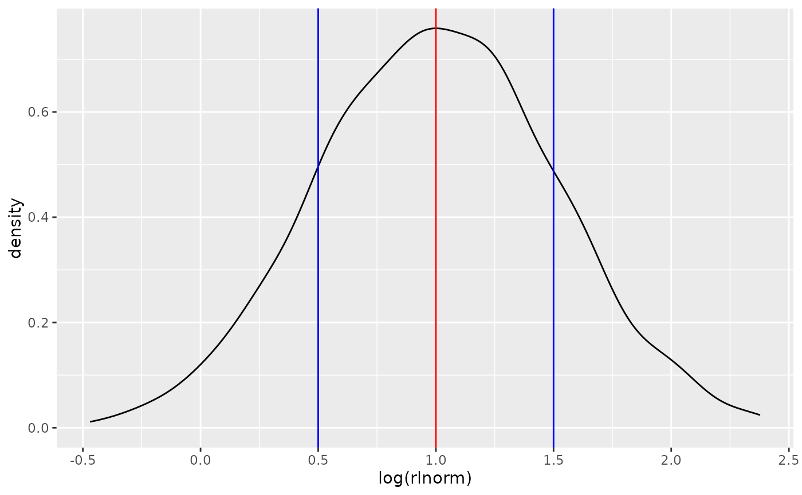
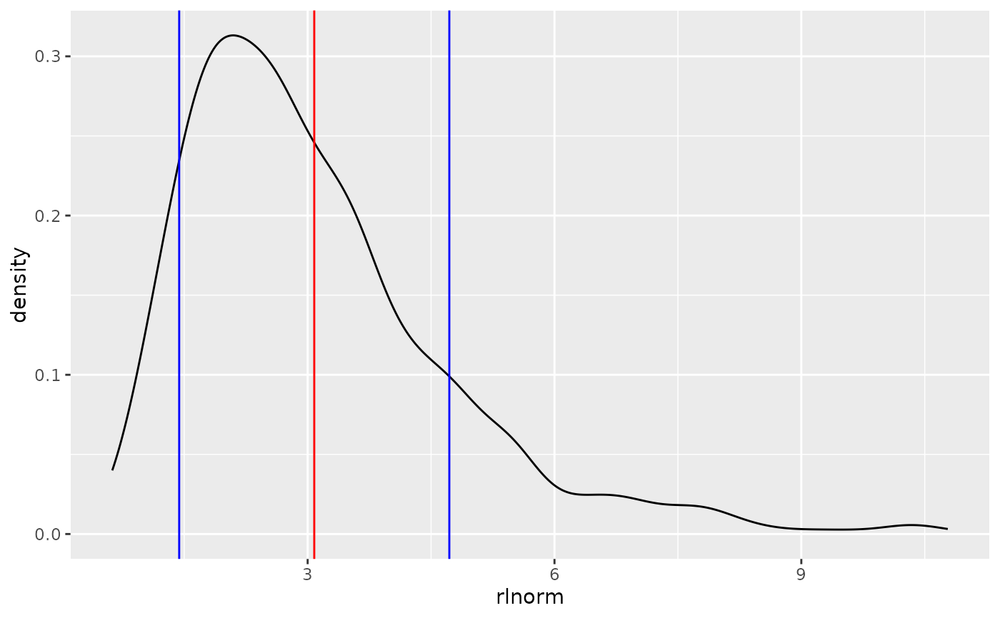

Translate means and standard errors/deviations of lognormal distributions between log and linear space.
Source:R/uncertainty.R
lognormal-moments.RdlogToLin makes the transformation from the moments of a lognormal
distribution in log space to the moments of the same distribution in linear
space.
Usage
logToLin(meanlog, sdlog, mslist)
linToLog(meanlin, sdlin, mslist)
mixedToLog(meanlin, sdlog, meanlog, sdlin)Arguments
- meanlog
The mean of the distribution on the log scale, with the same meaning as the
meanlogargument tostats::rlnorm.- sdlog
The standard deviation of the distribution on the log scale, with the same meaning as the
sdlogargument tostats::rlnorm.- mslist
Optionally, a list containing the meanlog and sdlog as the first and second elements. If this argument is specified, the first two arguments should be left missing.
- meanlin
The mean of the lognormal distribution on the linear scale.
- sdlin
The standard deviation of the lognormal distribution on the linear scale.
Details
Terminology
Let L be a sample from a lognormal distribution in linear space; for
example, L=rlnorm(1000) could be a set of predicted flux rates in
kg/day. Then let N be the corresponding set of predictions in log
space, as they emerge from a model with a logged term on the left-hand side;
for example, the output of predict(lm(log(L_obs) ~ ...)) where
L_obs is the set of observed flux rates used to calibrate the
lm model. N is related to L by N=log(L) or
L=exp(N), but the parameters of their distributions are more complicated.
(It could also be that L is not a set of predicted flux rates but
simply the uncertainty distribution of a single flux rate prediction. The
same principles apply.)
Given the above definition,
meanlin = mean(L) = mean(exp(N)) = exp(mean(N) + sd(N)^2/2)sdlin = sd(L) = sd(exp(N)) = sqrt((exp(sd(N)^2) - 1) * exp(2*mean(N) + sd(N)^2))meanlog = mean(N) = mean(log(L)) = log(mean(L)^2/sqrt(sd(L)^2 + mean(L)^2))sdlog = sd(N) = sd(log(L)) = sqrt(log(1 + sd(L)^2/mean(L)^2))
Note that meanlin does NOT simply equal exp(mean(N)), and sdlin does NOT
equal exp(sd(N)); this function exists to apply those more complicated
expressions on the right in the above list. Specifically, this function helps
you convert from meanlog=mean(N), sdlog=sd(N) to an appropriate
mean and sd for L in linear space.
Examples
# Explore with draws from a lognormally distributed sample
library(ggplot2)
logparams <- list(meanlog = 1, sdlog = 0.5)
loglin_data <- data.frame(rlnorm=rlnorm(1000, meanlog=logparams$meanlog, sdlog=logparams$sdlog))
ggplot(loglin_data, aes(x=log(rlnorm))) + geom_density() +
geom_vline(xintercept=logparams$meanlog, color="red") +
geom_vline(xintercept=logparams$meanlog+c(-1,1)*logparams$sdlog, color="blue")

linparams <- logToLin(ms=logparams)
ggplot(loglin_data, aes(x=rlnorm)) + geom_density() +
geom_vline(xintercept=linparams$meanlin, color="red") +
geom_vline(xintercept=linparams$meanlin+c(-1,1)*linparams$sdlin, color="blue")

#
# logToLin
logToLin(meanlog=1, sdlog=0.5)
#> meanlin sdlin
#> 1 3.080217 1.641572
logToLin(mslist=list(meanlog=1, sdlog=0.5))
#> meanlin sdlin
#> 1 3.080217 1.641572
logToLin(ms=linToLog(meanlin=3.080217, sdlin=1.641572))
#> meanlin sdlin
#> 1 3.080217 1.641572
#
# linToLog
linToLog(meanlin=1, sdlin=0.5)
#> meanlog sdlog
#> 1 -0.1115718 0.4723807
linToLog(mslist=list(meanlin=1, sdlin=0.5))
#> meanlog sdlog
#> 1 -0.1115718 0.4723807
linToLog(ms=logToLin(meanlog=-0.1115718, sdlog=0.4723807))
#> meanlog sdlog
#> 1 -0.1115718 0.4723807
#
# mixedToLog
linparams <- data.frame(meanlin=1, sdlin=0.5)
logparams <- linToLog(ms=linparams)
mixedToLog(meanlin=linparams$meanlin, sdlog=logparams$sdlog)
#> meanlog sdlog
#> 1 -0.1115718 0.4723807
if (FALSE) mixedToLog(meanlog=logparams$meanlog, sdlin=linparams$sdlin) # \dontrun{}
logToLin(ms=mixedToLog(meanlin=linparams$meanlin, sdlog=logparams$sdlog))
#> meanlin sdlin
#> 1 1 0.5